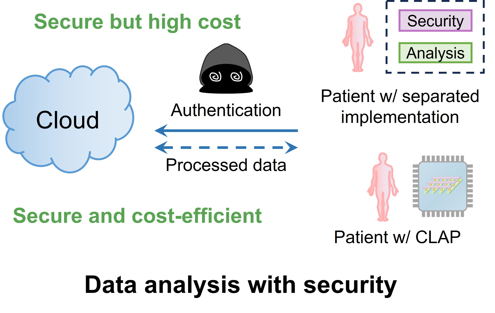
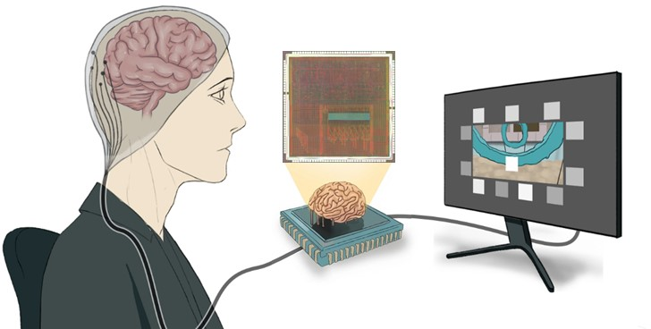
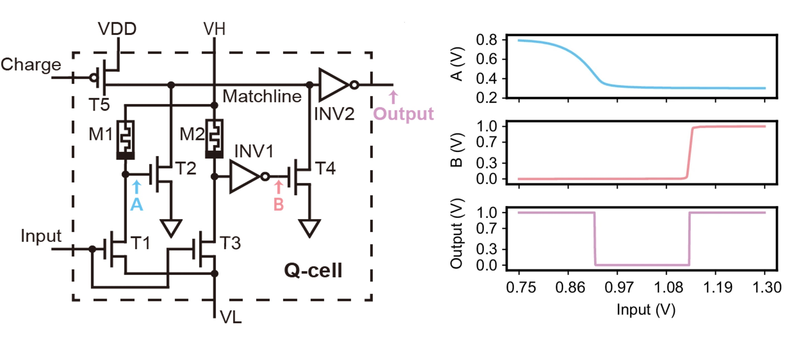
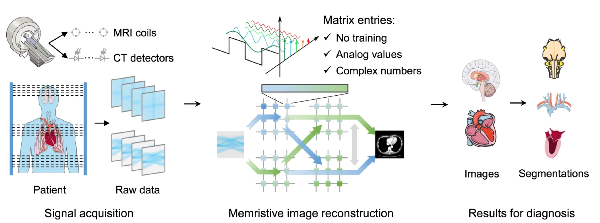
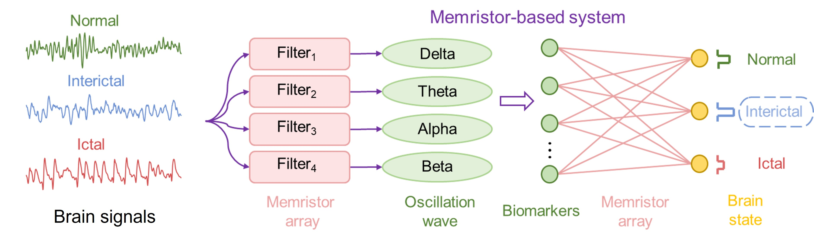
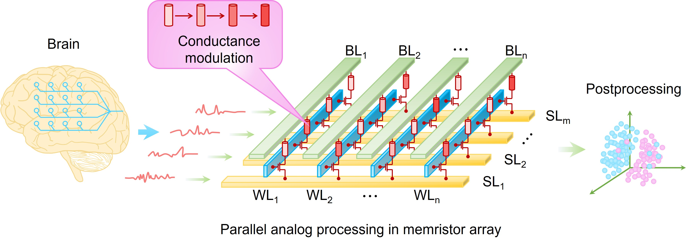

Neuromorphic Computing & Brain-Computer Interfaces
Bridging artificial intelligence and neuroscience through memristor-based computing
About Me
I am a Research Assistant Professor in the Department of Electrical and Computer Engineering at the University of Hong Kong. I received my Ph.D. from Tsinghua University in 2023 and B.E. from the University of Electronic Science and Technology of China in 2018.
My research focuses on memristor-based neuromorphic computing, compute-in-memory (CIM) chips, brain-computer interfaces (BCIs), AI hardware accelerators and AI healthcare.
Academic Highlights
- Published in Nature Electronics, Nature Communications, Science Advances, IEDM, DAC and etc.
- PI of projects funded by Hong Kong RGC and NSFC
Selected Awards
- HUANAO China BCI Prize Rising Star Award, 2025
- Falling Walls Science Breakthrough of the Year, Shortlist (Engineering & Technology), 2025
- China Top 10 Semiconductor Research Achievements, 2025
- China Society of Image and Graphics (CSIG) Outstanding Doctoral Dissertation Award, 2025
- China Major Science, Technology and Engineering Advancements, 2020
Professional Services
- TPC member: ICCAD (2023-2025), ASPDAC (2025-2026)
- Editorial Board: Scientific Reports (Springer Nature), BPEX (IOP Publishing), BMEF (a Science partner journal, junior), AI for Science (IOP Publishing, junior), etc.
- Reviewer: Nature Communications, Nano Letters, Journal of Neural Engineering, etc.
Recent News
Join Our Research Group / 课题组招募
We are looking for self-motivated individuals to join our research group. Open positions include:
Featured Research

Privacy-preserving data analysis using a memristor chip with colocated authentication and processing

A memristor-based adaptive neuromorphic decoder for brain–computer interfaces

Memristor-based adaptive analog-to-digital conversion for efficient and accurate compute-in-memory

Energy-efficient high-fidelity image reconstruction with memristor arrays for medical diagnosis

Neural signal analysis with memristor arrays towards high-efficiency Brain-Computer interfaces

Multichannel parallel processing of neural signals in memristor arrays
(Last updated on April, 2026)